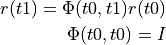

STM and Covariance Propagation¶
Problem¶
Spacecraft propagation advances the position and velocity of the spacecraft through time, and models mass flow during finite burn maneuvers. Users may also need to propagate the spacecraft’s orbital state transition matrix (STM) and the orbital covariance matrix. This chapter shows how to add the STM and covariance propagation to the propagation example shown in Propagation with the GMAT API.
Solution¶
The GMAT Spacecraft and propagation models work together to build and propagate the state transition and covariance matrices.
Example STM Propagation¶
Step 1: Configure the Spacecraft
We’ll need a spacecraft to propagate. Listing 2 shows an abbreviated block of the spacecraft configuration from Propagation with the GMAT API.
sat = gmat.Construct("Spacecraft", "LeoSat")
sat.SetField("DateFormat", "UTCGregorian")
...
sat.SetField("Cr", 1.8)
sat.SetField("DragArea", 1.5)
sat.SetField("SRPArea", 1.2)
The spacecraft initializes the state transition matrix to an identity matrix, and the covariance matrix to a 6x6 matrix with large values set nonzero along its diagonal. The STM setting is required so that the propagated and unpropagated STM requirements are met

The covariance matrix is generally set to more reasonable numbers before proceeding with covariance propagation, either through an estimation process or by direct user intervention. Listing 3 shows the latter approach.
# Initialize the covariance matrix
sat.SetRealParameter("Covariance", 0.000001, 0, 0)
sat.SetRealParameter("Covariance", 0.0000015, 1, 1)
sat.SetRealParameter("Covariance", 0.000001, 2, 2)
sat.SetRealParameter("Covariance", 2.5e-11, 3, 3)
sat.SetRealParameter("Covariance", 2.5e-11, 4, 4)
sat.SetRealParameter("Covariance", 2.5e-11, 5, 5)
Step 2: Update the propagation subsystem
GMAT’s propagators configure the data that is integrated using a component called the propagation state manager (PSM). The PSM assembles the data that is integrated into a vector that the numerical integrator uses to advance the GMAT simulation through time. The STM and covariance matrix are set to participated in the integration through calls to the PSM, shown in Listing 4.
# Setup STM and covariance propagation
psm = pdprop.GetPropStateManager()
psm.SetProperty("Covariance",sat)
psm.SetProperty("STM",sat)
Step 3: Spacecraft Updating
The propagation chapter of this document glosses over an object synchronization item that is required for successful covariance propagation. After a propagation step has been performed, the propagation vector managed by the PSM needs to be passed to the spacecraft object so that the internal spacecraft data is in sync with the propagation. This synchronization is performed by directing the initialized propagator to pass the state vector into the spacecraft. The propagator performs this action by calling methods on the PSM. Listing 5 shows the calls that accomplish this data synchronization.
# Perform top level and integrator initialization
gmat.Initialize()
pdprop.PrepareInternals()
propagator = pdprop.GetPropagator()
# Push the data into the spacecraft runtime elements
propagator.UpdateSpaceObject()
Note, in particular, the last line in this block. The call to UpdateSpaceObjects() is new in this chapter, and is the call that feeds the data from the propagation subsystem into the spacecraft object.
Step 4: Accessing the STM and Covariance
The steps shown above configure the GMAT API for STM and covariance propagation. The data is viewed by accessing it from the spacecraft object. The code in Listing 6 shows the access methods needed to use the matrix data. The code shown here accesses the data for printing.
print(sat.GetName(), " State and matrix data:\n")
print("Epoch: ", sat.GetEpoch())
print("Position: ", sat.GetField("X"), ", ", sat.GetField("Y"), ", ",
sat.GetField("Z"))
print("Velocity: ", sat.GetField("VX"), ", ", sat.GetField("VY"), ", ",
sat.GetField("VZ"))
# Access the state transition matrix data
stm = sat.GetRmatrixParameter("STM")
print("\nState Transition Matrix:\n")
for i in range(6):
cstr = ""
for j in range(6):
cstr = cstr + " " + str(stm.GetElement(i,j))
print(cstr)
print()
# Access the covariance matrix data
cov = sat.GetCovariance().GetCovariance()
print("\nCovariance:\n")
for i in range(6):
cstr = ""
for j in range(6):
cstr = cstr + " " + str(cov.GetElement(i,j))
print(cstr)
Discussion¶
This example has provides an overview of the methods used to access the STM and Covariance matrices using the GMAT API. The appendix to this chapter contains a complete working of these features.
Appendix: A Complete Example¶
#!/bin/python3
# The Propagation chapter example code from the GMAT API Cookbook
from load_gmat import gmat
import matplotlib.pyplot as plt
# Define core objects
def ConfigureCoreObjects():
'''
Objects built in the earlier exercise
'''
# Configure the spacecraft
sat = gmat.Construct("Spacecraft", "LeoSat")
sat.SetField("DateFormat", "UTCGregorian")
sat.SetField("Epoch", "12 Mar 2020 15:00:00.000")
sat.SetField("CoordinateSystem", "EarthMJ2000Eq")
sat.SetField("DisplayStateType", "Keplerian")
sat.SetField("SMA", 7005)
sat.SetField("ECC", 0.008)
sat.SetField("INC", 28.5)
sat.SetField("RAAN", 75)
sat.SetField("AOP", 90)
sat.SetField("TA", 45)
sat.SetField("DryMass", 50)
sat.SetField("Cd", 2.2)
sat.SetField("Cr", 1.8)
sat.SetField("DragArea", 1.5)
sat.SetField("SRPArea", 1.2)
# Create the ODEModel container
fm = gmat.Construct("ForceModel", "TheForces")
# An 8x8 JGM-3 Gravity Model
earthgrav = gmat.Construct("GravityField")
earthgrav.SetField("BodyName","Earth")
earthgrav.SetField("Degree",8)
earthgrav.SetField("Order",8)
earthgrav.SetField("PotentialFile","JGM2.cof")
# Add the force into the ODEModel container
fm.AddForce(earthgrav)
# The Point Masses
moongrav = gmat.Construct("PointMassForce")
moongrav.SetField("BodyName","Luna")
sungrav = gmat.Construct("PointMassForce")
sungrav.SetField("BodyName","Sun")
# Drag using Jacchia-Roberts
jrdrag = gmat.Construct("DragForce")
jrdrag.SetField("AtmosphereModel","JacchiaRoberts")
# Build and set the atmosphere for the model
atmos = gmat.Construct("JacchiaRoberts")
jrdrag.SetReference(atmos)
# Add all of the forces into the ODEModel container
fm.AddForce(moongrav)
fm.AddForce(sungrav)
fm.AddForce(jrdrag)
# Build the propagation container that connect the integrator, force model, and spacecraft together
pdprop = gmat.Construct("Propagator","PDProp")
# Create and assign a numerical integrator for use in the propagation
gator = gmat.Construct("PrinceDormand78", "Gator")
pdprop.SetReference(gator)
# Set some of the fields for the integration
pdprop.SetField("InitialStepSize", 60.0)
pdprop.SetField("Accuracy", 1.0e-12)
pdprop.SetField("MinStep", 0.0)
# Assign the force model to the propagator
pdprop.SetReference(fm)
pdprop.AddPropObject(sat)
return sat, pdprop
def StepAMinute(sat, propagator):
propagator.Step(60.0)
def UpdateData(propagator, time, pos, vel):
gatorstate = propagator.GetState()
if len(time) == 0:
t = 0.0
else:
t = time[len(time) - 1] + 60.0
r = []
v = []
for j in range(3):
r.append(gatorstate[j])
v.append(gatorstate[j+3])
time.append(t)
pos.append(r)
vel.append(v)
def ShowStateStmCov(sat):
print(sat.GetName(), " State and matrix data:\n")
print("Epoch: ", sat.GetEpoch())
print("Position: ", sat.GetField("X"), ", ", sat.GetField("Y"), ", ",
sat.GetField("Z"))
print("Velocity: ", sat.GetField("VX"), ", ", sat.GetField("VY"), ", ",
sat.GetField("VZ"))
# Access the state transition matrix data
stm = sat.GetRmatrixParameter("STM")
print("\nState Transition Matrix:\n")
for i in range(6):
cstr = ""
for j in range(6):
cstr = cstr + " " + str(stm.GetElement(i,j))
print(cstr)
print()
# Access the covariance matrix data
cov = sat.GetCovariance().GetCovariance()
print("\nCovariance:\n")
for i in range(6):
cstr = ""
for j in range(6):
cstr = cstr + " " + str(cov.GetElement(i,j))
print(cstr)
print()
# Load the preliminaries
sat, pdprop = ConfigureCoreObjects()
# ------------------------------------------------------------------------------
# New code
# ------------------------------------------------------------------------------
# Initialize the covariance matrix
sat.SetRealParameter("Covariance", 0.000001, 0, 0)
sat.SetRealParameter("Covariance", 0.0000015, 1, 1)
sat.SetRealParameter("Covariance", 0.000001, 2, 2)
sat.SetRealParameter("Covariance", 2.5e-11, 3, 3)
sat.SetRealParameter("Covariance", 2.5e-11, 4, 4)
sat.SetRealParameter("Covariance", 2.5e-11, 5, 5)
# Setup STM and covariance propagation
psm = pdprop.GetPropStateManager()
psm.SetProperty("Covariance",sat)
psm.SetProperty("STM",sat)
# Perform top level and integrator initialization
gmat.Initialize()
pdprop.PrepareInternals()
propagator = pdprop.GetPropagator()
# Push the data into the spacecraft runtime elements
propagator.UpdateSpaceObject()
# Matplotlib graphics buffers
time = []
pos = []
vel = []
# Save initial state information into the graphics buffers
UpdateData(propagator, time, pos, vel)
# Show initial information
ShowStateStmCov(sat)
# Propagate 10 minutes and buffer data at each step
for i in range(10):
StepAMinute(sat, propagator)
# Push the propagation data onto the spacecraft
propagator.UpdateSpaceObject()
UpdateData(propagator, time, pos, vel)
# Show the results
plt.rcParams['figure.figsize'] = (15, 5)
f1 = plt.figure(1)
positions = plt.plot(time, pos)
f2 = plt.figure(2)
velocities = plt.plot(time, vel)
f1.show()
f2.show()
ShowStateStmCov(sat)
print("Press Enter")
input()